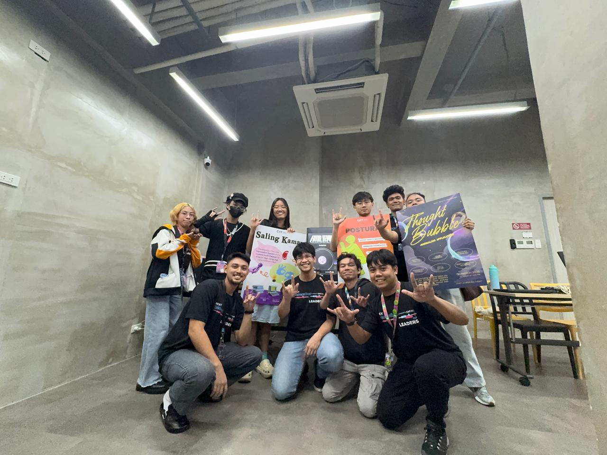
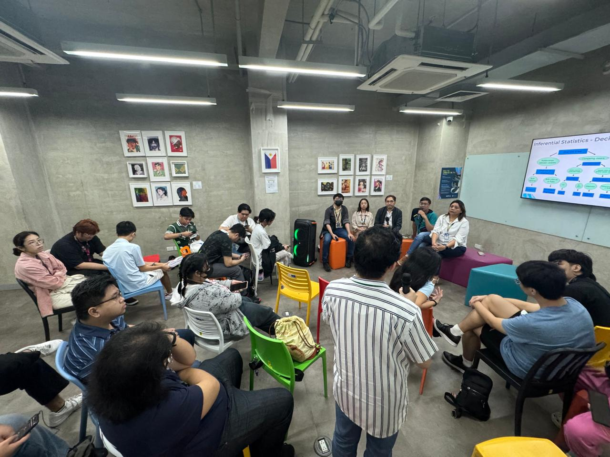

The idea began in 2024 while I was teaching at LP4Y, an NGO dedicated to helping underserved youth in the Philippines. I looked at how these vital organizations operated online and saw broken websites managed by completely overwhelmed staff. On my 24th birthday, November 7th, I decided to step in and help using the skills I knew best. That was the day SK Solutions began.
The Double Life: Operations
Balancing a Computer Science degree while running a startup takes pure grit and absolute determination. The world is already hard enough as it is. Our generation grew up with access to the most knowledge in human history, and I firmly believe it is our turn to step up. We have to do our part for society no matter how exhausting it gets.

Leading The Squad: Management
My approach to leadership comes down to treating people like human beings. I make sure to pay them properly, reward their hard work, and connect with them personally. When you show people genuine respect, they give that same energy right back to you. I will always make sure my team is taken care of first, even if it means I do not make a single cent myself.
"I only give out results. No BS. No drama. No complications."
Adapting and Learning: Technical
I quickly learned that these organizations need much more than a basic webpage. We are building massive communication hubs used by hundreds of NGOs across the Philippines and creating secure platforms for journalists reporting from active war zones. Every project forces us to learn and adapt to entirely new technologies on the fly.
The Trenches: The Struggles
Running a startup at twenty-four is honestly brutal. The endless meetings, the constant messages, and the sheer amount of planning take a massive toll on you. As a solo founder, I wear every single hat from project manager to lead designer to systems architect.
People will sometimes try to underestimate you because you are young or still in college. My advice is to act bigger than you are. Project confidence and certainty into the room. If you carry yourself with respect, clients will never treat you as anything less.
